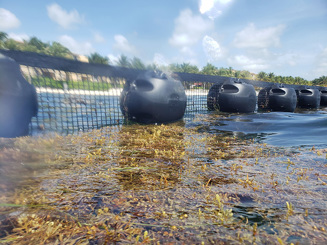
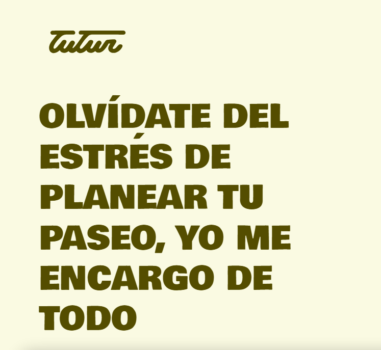

Get to know what I can do
Sargasum Recollection at DESMI Latinamerica

I worked on the recollection of an algae called sargassum, it is dangerous for tourists and also generally disliked for its rotten smell.
Due to climate change, this sargasum started appearing much more often on caribean coastlines. de Danish company, DESMI, has a division for business in Latinamerica. From that division i was assigned the monitoring of hands-on work and engineering optimizations in the plans for Sartgassum recollection.
Also, I was asigned to perform geolocational measurements and vectorial calculations for the flow of sargassum across multiple parts of a popular Hotel's coast. It basically entailed putting balloons on some algae and measuring their movements hehe.
Tech support for a University

During the first half of my semester at a university in Santander, Spain. I "Worked" as part of the Tech Support team for the University. I had to be abailable for continous hours and be ready to travel across campus to assist class professors inmediately. It was a great job that gave me no experience because i already knew all about compouter mantainance and the pay was an amazing 20 Kronnes an hour.
TUTUR Travel

I have worked with thr travel company TUTUR to clean their database of any imperferctions, document changes and generate statistical analisis of their systems, as well as help in the planning to develop a new app for their database.
Languages i know
Spanish - Native
English - C2 but dumm
Italian - Long forgotten, can understand but no speech
Certifications
Unfortunately I am not certified officially in anything other than my driver's license, wich isnt even international yet